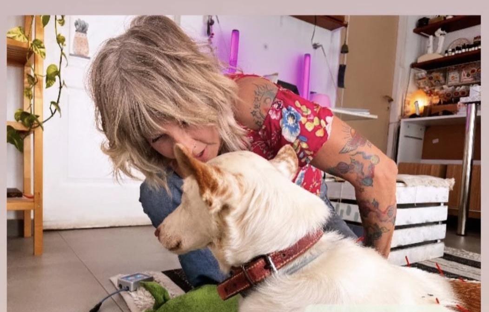
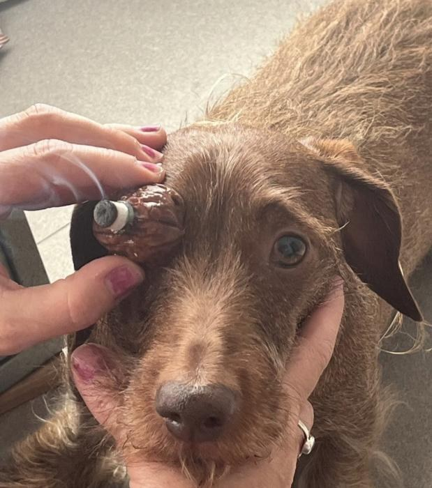
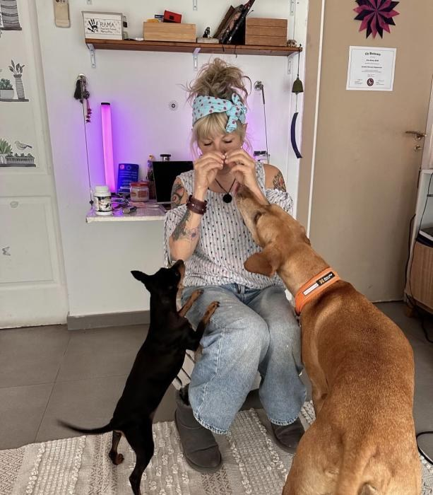
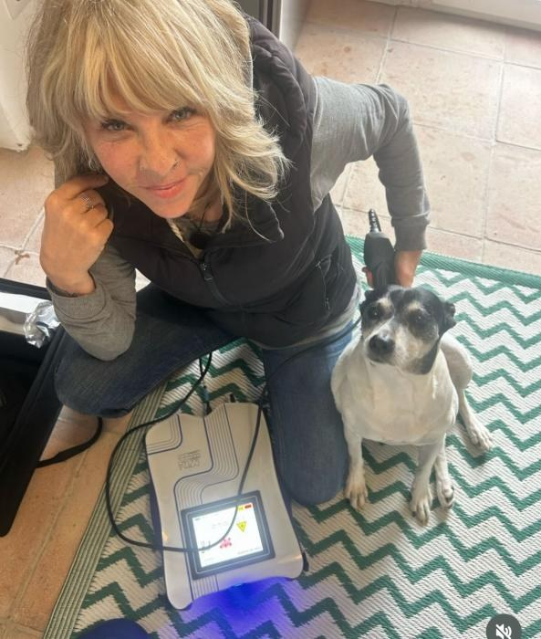
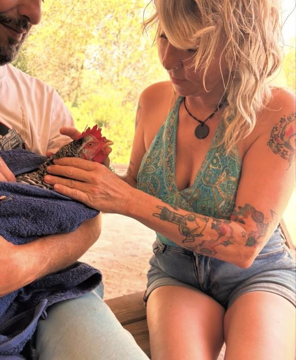
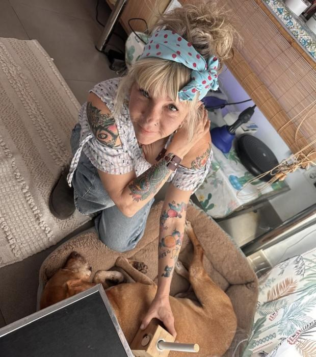
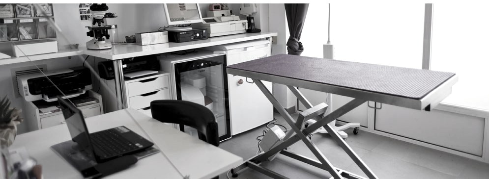
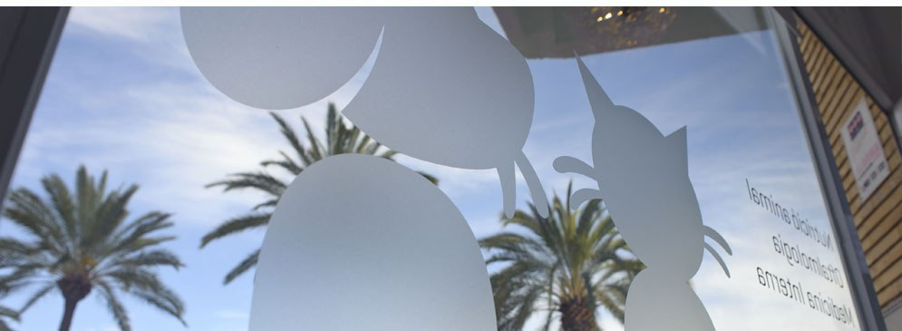

Veinticuatro años tratando a las mascotas de Xàbia como familia. Medicina integrativa, oftalmología UCM, acupuntura y aromaterapia clínica — todo en un mismo espacio, con tiempo de verdad para cada consulta.

No hacemos medicina de cinta transportadora. Cada consulta empieza por escuchar — a ti y a tu animal — y sigue por lo que de verdad necesita. Convencional cuando toca. Integrativa cuando ayuda.
Para dolor crónico, artrosis, ansiedad, problemas digestivos y recuperación postquirúrgica. Complementa — no sustituye — la medicina convencional. Nina es una de las pocas veterinarias de la Marina Alta formada en estas disciplinas.

OftalmologíaDiagnóstico y tratamiento de patologías oculares con certificación UCM y membresía SEOVET. Úlceras, cataratas, conjuntivitis, KCS, uveítis.

Sin estrésSala pequeña, luz cálida, nunca la sala de espera llena. Tiempo real para que el animal llegue, huela, respire y se deje tocar. La diferencia se nota desde el primer minuto.

Láser MLSTratamiento no invasivo, sin dolor y sin efectos secundarios para artrosis, heridas crónicas, tendinitis, otitis y cicatrización postquirúrgica. Sesiones de 10–15 minutos.

PreventivaVacunación, desparasitación, chequeos semestrales, analíticas, ecografía, radiología digital, identificación y pasaporte. También exóticos y fauna de corral del campo xabiero.

Nina lleva más de dos décadas tratando a las mascotas de Xàbia y alrededores. Lo suyo no es una clínica más: es un proyecto personal construido gato a gato, perro a perro, a veces con una gallina de por medio.
Habla español, inglés, alemán y neerlandés — tres de cada cuatro clientes son expatriados de la costa. Atiende pocos animales al día, pero les dedica el tiempo que merecen. Combina lo que aprendió en la facultad con lo que le enseñaron veinte años de oficio y miles de consultas reales.
No vas a estar en la sala de espera oyendo a otros perros ladrar. Cada hora atendemos una mascota, con el tiempo que haga falta para hacer bien la consulta — y para que salga queriendo volver.
Llamas, escribes WhatsApp o rellenas el formulario. Nina te responde el mismo día y agendamos en función de la urgencia, no del calendario.
Sesión de 30 a 45 minutos, sala pequeña y luz cálida. Primero hablamos, después exploramos. El animal marca el ritmo — nunca al revés.
Te explicamos el diagnóstico en palabras reales, sin jerga, en el idioma que prefieras. Convencional, integrativo, o ambos — siempre con los por qués.
No desaparecemos después de la consulta. Revisamos evolución por WhatsApp, ajustamos pauta si hace falta, y te llamamos cuando toca revisión.
Nina no te vende tratamientos. Te explica lo que le pasa a tu animal y te acompaña hasta que está bien.Reseña Google · 5 estrellas · 2024
Pza. Almirante Bastarreche 14, en el centro de Xàbia. Luz natural, plantas, olor a aceites esenciales y ningún ladrido de fondo. Así es como debería ser ir al veterinario.

Sala de exploración
Entrada · Pza. BastarrecheTe respondemos el mismo día, en español, english, Deutsch o Nederlands. Si es urgente, llama directamente al teléfono de abajo — contesta Nina o alguien del equipo.